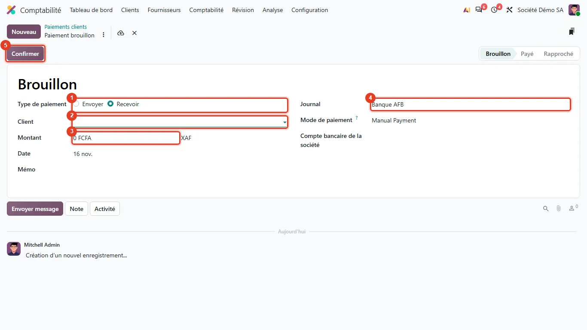

Enregistrer un virement interne entre banques et caisses
Objectif. Transférer des fonds d'une banque ou d'une caisse à une autre sans toucher aux comptes de résultat.
Menu Odoo 15Comptabilité > Clients (ou Fournisseurs) > Paiements
Étapes
- Cliquez sur Nouveau.
- Dans Odoo 15, cochez Transfert interne.
- Choisissez le journal de départ et le journal de destination, le montant et la date.
- Confirmez : l'argent passe par le compte de virements de fonds (585).
- Au rapprochement bancaire de chaque banque, rapprochez la ligne du relevé avec ce virement.


À vérifier
- Le compte de virements de fonds revient à zéro une fois les deux côtés rapprochés.
À éviter
- Ne passez pas un versement d'espèces en banque comme un encaissement client.
Exercice
Virez 500 000 de la caisse vers la banque, puis rapprochez le relevé.